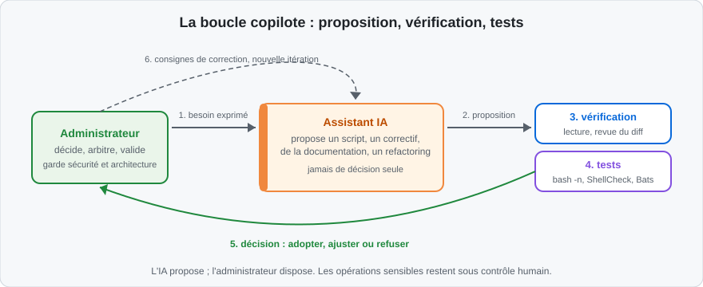
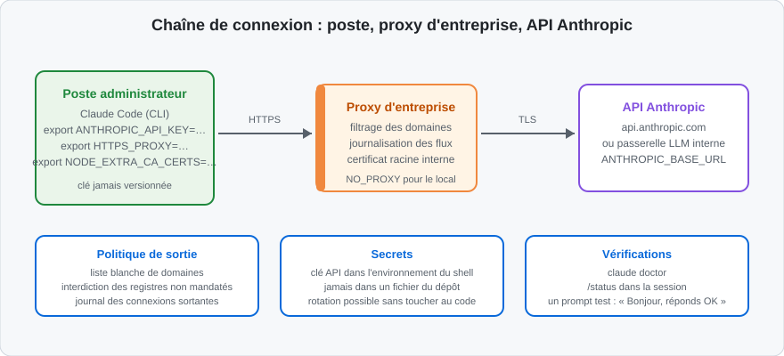
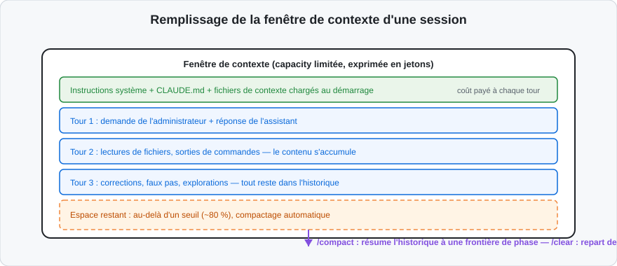
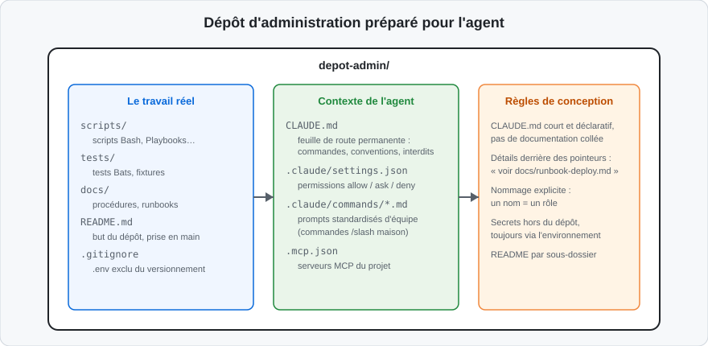

Un assistant de code IA n'est ni un stagiaire zélé ni un générateur aléatoire. C'est un copilote : il produit vite, en grande quantité, avec une assurance qui ne doit jamais être confondue avec une compétence. La valeur de l'outil dépend entièrement de la manière dont l'administrateur cadre son usage.
Ce que l'IA fait bien
L'assistant excelle dans quatre catégories de travail, toutes utiles en administration :
-
la génération de squelettes : première version d'un script de sauvegarde, boucle de traitement, analyse d'options, structure de fonction ;
-
les suggestions de compléments : cas limite oublié, option de commande pertinente, gestion d'erreur manquante ;
-
le refactoring : rendre un script hérité lisible, le découper en fonctions, remplacer des constructions fragiles ;
-
la documentation : en-tête de script, guide d'utilisation, commentaire d'une procédure opaque.
Ces tâches partagent un point commun : elles ont un critère de vérification externe. Un script tourne ou échoue ; une documentation décrit ou trahit le code. L'assistant peut être contrôlé après coup, ce qui rend son usage sûr.
L'assistant se comporte comme un collaborateur très rapide, très lu, mais qui n'a jamais administré votre système. Vous ne lui confieriez pas les clés de la production le premier jour. Vous lui confieriez la rédaction d'un premier jet, que vous reliriez avant diffusion.
Ce que l'IA ne doit jamais décider seule
Trois domaines restent sous responsabilité humaine, sans exception :
-
la sécurité : choix des droits, ouverture de ports, gestion des secrets, exceptions de pare-feu. L'assistant optimise le confort, pas la politique de sécurité de l'entreprise ;
-
l'architecture : découpage des scripts, choix des outils, structuration du dépôt. Une décision d'architecture erronée se paie pendant des années ;
-
les opérations sensibles : tout ce qui modifie l'état d'un système en production — redémarrages de services, suppressions, migrations. Une erreur d'opération ne se corrige pas dans Git.
Confier à l'assistant une action destructive décrite vaguement. « Nettoie les
vieux fichiers de sauvegarde » exécuté sans borne temporelle, sans liste
d'exclusion et sans validation humaine a déjà supprimé des sauvegardes
récentes. Toute commande irréversible reçoit un --dry-run, une cible de test
et une relecture humaine.
La boucle de travail administrateur + IA
Le travail assisté suit une boucle en six temps, répétée jusqu'à satisfaction :
- l'administrateur exprime un besoin précis, avec contexte et contraintes ;
- l'assistant propose un script ou une modification ;
-
l'administrateur vérifie : lecture du diff, recherche des patterns dangereux ;
-
les tests tranchent :
bash -n, ShellCheck, tests Bats, exécution sur cible isolée ; -
l'administrateur décide : adopter, ajuster ou refuser ;
- les consignes de correction repartent vers l'assistant pour l'itération suivante.

Ce schéma se lit dans les deux sens. De gauche à droite, le flux nominal : le besoin devient proposition, la proposition devient script vérifié. Le retour en pointillé, du haut vers l'assistant, matérialise la correction : la boucle n'est pas une négociation, c'est un cycle d'amélioration. Tant que l'étape 5 n'a pas eu lieu, le script n'existe pas — il n'y a qu'une proposition.
Le vocabulaire minimal du développement assisté
Les échanges avec l'assistant mobilisent un vocabulaire précis. Le tableau suivant fixe les termes utilisés pendant toute la formation :
| Terme | Définition courte |
|---|---|
| modèle (model) | Le réseau de neurones entraîné qui génère le texte ; il est sans état : il ne se souvient de rien entre deux sessions |
| jeton (token) | L'unité de découpage du texte facturée et consommée ; un millier de jetons ≈ 750 mots français |
| contexte | Tout ce que le modèle « voit » : instructions système, historique, fichiers lus, résultats de commandes |
| fenêtre de contexte | La taille maximale du contexte ; au-delà, il faut compacter ou repartir de zéro |
| session | Une conversation continue avec l'assistant, du démarrage jusqu'à la sortie |
| harnais | L'outil qui enrobe le modèle : découpage du contexte, appel des outils, affichage — Claude Code est un harnais |
| agent | Le modèle + son harnais + ses outils : l'entité qui lit, écrit et exécute |
| vérification automatisée | Un contrôle déterministe : test, linter, compilation — le seul signal qui permet à l'agent de s'autocorriger |
| revue humaine | La lecture du diff produit par l'agent ; lire le résumé de l'agent ne compte pas |
« Le modèle » et « l'agent » ne sont pas interchangeables. Le modèle est sans état et ne sait que produire du texte. C'est le harnais qui lui donne des outils, un contexte et une session. Quand un script tourne mal, la cause est presque toujours dans le couple contexte + instructions, pas dans une « intelligence » du modèle.
Qui garde quoi : le partage des responsabilités
| Domaine | L'assistant | L'administrateur |
|---|---|---|
| Rédaction du premier jet | Oui, rapide | Relit |
| Choix des options de sécurité | Propose | Décide |
| Exécution sur système de production | Jamais | Toujours |
| Tests automatisés | Écrit les tests | Valide leur pertinence |
| Interprétation d'un résultat inattendu | Aide au diagnostic | Tranche |
| Décision d'architecture | Suggère | Assume |
Cette grille est le contrat de la formation. Les chapitres suivants l'outillent : le présent chapitre installe le poste et le cadre de travail ; le chapitre 2 ajoute l'isolation par bac à sable et l'industrialisation en équipe.
L'installation de Claude Code sur un poste d'administration ressemble à celle de n'importe quel outil de développement, avec une exigence supplémentaire : le poste d'administration est un poste sensible, souvent derrière un proxy d'entreprise. Chaque étape ci-dessous intègre donc la variante « environnement contraint ».
Prérequis du poste
Le tableau récapitule les prérequis avant toute installation :
| Prérequis | Détail | Vérification |
|---|---|---|
| Système supporté | Linux (Ubuntu, Debian), macOS, Windows (natif ou WSL) | uname -a |
| Node.js 18+ | Requis pour l'installation npm | node --version |
| Terminal usable | Bash, Zsh ; sous Windows, Git Bash ou WSL | echo $SHELL |
| Compte d'API | Clé Anthropic valide ou compte Claude avec abonnement | console d'administration de l'entreprise |
| Droits d'installation | npm install -g ou installateur natif |
selon politique locale |
La voie la plus fluide est WSL2 (Ubuntu) : Claude Code s'exécute dans un environnement Linux complet, et les scripts Bash produits tournent tels quels. L'installation native Windows fonctionne aussi ; Git Bash reste nécessaire pour les scripts du support.
Gérer les clés d'API
L'authentification repose sur une clé portée par une variable d'environnement. Deux cas se présentent :
-
compte Claude individuel (abonnement Pro/Max) : la commande
claudeouvre un flux d'authentification navigateur au premier lancement, aucune clé à manipuler ; -
clé d'API d'entreprise (Console Anthropic) : la clé est fournie par le
service en charge des licences et posée dans l'environnement.
# Clé d'API dans l'environnement du shell (à la session)
export ANTHROPIC_API_KEY="sk-ant-api03-…"
# De façon permanente, dans le profil personnel (~/.bashrc), jamais dans le dépôt
echo 'export ANTHROPIC_API_KEY="sk-ant-api03-…"' >> ~/.bashrc
Trois règles non négociables :
-
la clé ne figure jamais dans un fichier versionné, un script, un README ou un ticket ;
-
le fichier
.envqui la contient est listé dans.gitignoreet interdit de lecture à l'agent (règleRead(.env)endeny, vue plus loin dans ce chapitre) ; -
une clé compromise est révoquée depuis la console, pas « surveillée ».
Un export tapé directement dans un terminal partagé ou enregistré dans un
enregistrement d'écran fuit la clé. Sur un poste de formation, saisir la clé
dans le profil personnel, puis vérifier avec echo $ANTHROPIC_API_KEY | wc -c
plutôt qu'en l'affichant.
Traverser un proxy d'entreprise
Sur un réseau d'entreprise, le trafic sortant passe par un proxy, souvent avec un certificat racine interne (inspection TLS). Claude Code, comme tout client Node.js, respecte les variables d'environnement standard :
# Proxy d'entreprise
export HTTPS_PROXY=http://proxy.entreprise.example:8080
export HTTP_PROXY=http://proxy.entreprise.example:8080
# Contourner le proxy pour les adresses internes
export NO_PROXY="localhost,127.0.0.1,.entreprise.example"
# Certificat racine de l'entreprise (inspection TLS)
export NODE_EXTRA_CA_CERTS=/etc/ssl/certs/entreprise-ca.pem
Points d'attention fréquents :
-
les proxies SOCKS ne sont pas pris en charge ; seul le proxy HTTP/HTTPS fonctionne ;
-
les connexions vers la boucle locale (
localhost) contournent le proxy automatiquement ; -
si le trafic reste bloqué, vérifier que le proxy autorise
api.anthropic.cometclaude.aidans sa liste de sortie ; -
une passerelle LLM interne (LLM Gateway type LiteLLM) remplace parfois l'API directe : la variable
ANTHROPIC_BASE_URLpointe alors vers le service interne.
# Passerelle LLM interne au lieu de l'API directe
export ANTHROPIC_BASE_URL=http://llm-gateway.entreprise.example:4000
Les pannes de connectivité se résolvent dans un ordre déterminé :
| Symptôme | Cause probable | Vérification |
|---|---|---|
claude doctor : authentification en échec |
clé absente ou expirée | echo -n $ANTHROPIC_API_KEY \| wc -c |
| Délai puis timeout | proxy non déclaré ou refusé | curl -I https://api.anthropic.com |
| Erreur de certificat TLS | autorité racine interne non ajoutée | NODE_EXTRA_CA_CERTS renseigné |
| Réponse de la mauvaise passerelle | ANTHROPIC_BASE_URL erroné |
echo $ANTHROPIC_BASE_URL |
| Session lente uniquement pour la documentation | proxy qui filtre les domaines MCP | /mcp dans la session |
Installer Claude Code
Deux voies d'installation officielles existent. L'installateur natif est recommandé : pas de dépendance Node.js globale, mises à jour intégrées.
Voie 1 — installateur natif (recommandé) :
# macOS et Linux
curl -fsSL https://claude.ai/install.sh | bash
# Derrière un proxy d'entreprise : les variables avant la commande
export HTTPS_PROXY=http://proxy.entreprise.example:8080
curl -fsSL https://claude.ai/install.sh | bash
Voie 2 — npm :
npm install -g @anthropic-ai/claude-code
Installer un paquet npm global avec sudo installe du code exécuté en root
et crée des conflits de droits dans ~/.npm. Sur un poste contraint,
configurer un préfixe utilisateur (npm config set prefix ~/.npm-global)
plutôt que d'élever les privilèges.
L'intégration IDE est optionnelle mais confortable : l'extension Claude Code pour VS Code ajoute le lanceur, la sélection de contexte et le diff visuel des modifications proposées par l'agent. Le terminal reste le mode principal de cette formation.
Maintenir l'installation
Un poste d'administration se maintient comme un serveur : avec une procédure connue, pas au doigt mouillé. Trois réflexes suffisent :
| Besoin | Commande | Fréquence |
|---|---|---|
| Connaître la version | claude --version |
au diagnostic |
| Mettre à jour (installateur natif) | claude update |
mensuelle, ou selon la politique du service |
| Mettre à jour (voie npm) | npm update -g @anthropic-ai/claude-code |
idem |
Une montée de version peut changer des réglages par défaut (nouvelles règles de
permissions, nouveaux outils). Le réflexe d'après-mise-à-jour : relancer
claude doctor, ouvrir une session test, vérifier /status. Deux minutes qui
évitent une demi-heure de diagnostic en pleine tâche.
Certains services figent la version de l'outil le temps d'une validation
interne. Dans ce cas, noter la version validée dans le CLAUDE.md du dépôt
d'équipe : l'agent comme les collègues sauront qu'un écart de version
n'est pas une simple négligence.
Vérifier l'installation et la connectivité
Une installation qui « semble » fonctionner sans vérification formelle coûte cher le lendemain. Trois contrôles suffisent :
# 1. Version installée
claude --version
# 2. Diagnostic global : installation, configuration, réseau, santé du compte
claude doctor
# 3. Première session test : le prompt le plus simple possible
claude
> Bonjour, réponds simplement « OK ».
Dans la session, la commande /status affiche le compte actif, le modèle
courant et l'état des serveurs MCP. Si les trois contrôles passent, le poste est
opérationnel.

Ce schéma montre que la sécurité de la chaîne ne repose pas sur un seul maillon. La clé est protégée par l'environnement du shell, le trafic par le proxy, le compte par la console d'administration. Le bandeau du bas rappelle les trois réflexes permanents : politique de sortie maîtrisée, secrets hors du dépôt, vérifications après chaque changement.
En cas de doute (claude doctor en erreur, session qui échoue), vérifier dans
cet ordre : la variable de clé (echo -n $ANTHROPIC_API_KEY | wc -c), le
proxy (curl -I https://api.anthropic.com), le certificat
(NODE_EXTRA_CA_CERTS renseigné), la passerelle (ANTHROPIC_BASE_URL).
Quatre causes, quatre vérifications, dans cet ordre.
Une fois l'outil installé, trois réglages déterminent la qualité et le coût du travail : le modèle choisi, la gestion du contexte et les préférences de confidentialité. Ce sont les seuls réglages qu'un administrateur touche la première semaine — le reste est déjà bien configuré par défaut.
Choisir le modèle selon la tâche
Claude Code propose plusieurs modèles, du plus léger au plus puissant. La règle d'un administrateur est simple : le modèle le plus capable n'est pas le plus économique. Chaque montée de gamme multiplie le coût de 3 à 15 fois.
| Modèle | Usage type en administration | Exemple de demande |
|---|---|---|
| Modèle léger (Haiku) | tâches simples, explication, correction ponctuelle | « explique cette ligne », « corrige cette faute dans l'aide du script » |
| Modèle intermédiaire (Sonnet) | défaut polyvalent : génération, refactoring, debug | « refactorise ce script de sauvegarde en fonctions » |
| Modèle le plus capable (Opus) | conception, architecture, revue de sécurité | « conçois la structure du module de monitoring » |
# Dans une session
/model # liste les modèles et change le modèle courant
# De façon permanente, dans ~/.claude/settings.json
{
"model": "sonnet"
}
La règle d'or pour un administrateur : modèle léger pour corriger et expliquer, modèle intermédiaire pour générer et déboguer, modèle supérieur pour concevoir et relire la sécurité. Le changement se fait à la demande, pas pour la journée entière.
Comprendre le contexte et la fenêtre
Tout ce que le modèle lit compte : les instructions système, le fichier de contexte du projet, l'historique de la conversation, chaque fichier ouvert, chaque sortie de commande. Une session qui s'étend remplit sa fenêtre de contexte comme un réservoir — et quand le réservoir déborde, le travail se dégrade.
La dégradation est progressive et sournoise :
-
d'abord, l'agent relit des fichiers qu'il avait déjà lus (la fenêtre est presque pleine) ;
-
puis, le compactage automatique résume l'historique et perd des décisions prises une heure plus tôt ;
-
enfin, l'agent « oublie » une contrainte donnée au début et produit un script qui la contredit — avec assurance.

Le schéma appelle une lecture attentive : le bloc vert, en bas, est payé à
chaque tour, que la tâche le concerne ou non. C'est pourquoi un fichier de
contexte (CLAUDE.md) doit rester court — son coût est permanent. Les blocs
bleus, eux, ne servent souvent plus à rien après quelques tours : les résultats
d'outils d'une exploration achevée n'ont plus d'usage, mais restent dans la
fenêtre.
Piloter le contexte : les commandes de gestion
Quatre commandes suffisent à maîtriser la fenêtre :
| Commande | Effet | Quand l'utiliser |
|---|---|---|
/context |
Affiche le remplissage de la fenêtre et son contenu | point de contrôle régulier |
/compact |
Résume l'historique et repart avec le résumé | à une frontière de phase, avant une nouvelle tâche |
/clear |
Vide tout et repart de zéro | entre deux tâches sans lien |
/cost |
Affiche les jetons et le coût de la session | avant/après une tâche coûteuse |
# Exemple de discipline de session
/context # où en suis-je ?
/compact # le cadrage est fait, on allège avant la génération
… génération du script …
/cost # mesure du coût de la passe
Le compactage automatique se déclenche vers 80 % de remplissage, au milieu d'une tâche, sans que personne ne choisisse ce qui est conservé. Compacter manuellement à une frontière naturelle — plan établi, script généré, tests passés — garde le contrôle des décisions. La frontière de phase est le bon moment ; le milieu d'un refactoring en est le pire.
Suivre et maîtriser la consommation
En équipe, la question arrive vite : « combien coûte un administrateur assisté par mois ? ». Les jetons d'entrée se facturent à chaque tour ; un fichier de 5 000 lignes lu en entier consomme environ 12 000 jetons, relus à chaque tour tant qu'il reste dans l'historique.
Le tableau des leviers, du plus impactant au plus fin :
| Levier | Gain typique | Mise en œuvre |
|---|---|---|
| Choisir le bon modèle | ×3 à ×15 sur le coût | Haiku pour les tâches simples, Sonnet par défaut |
/compact régulier |
évite le gonflement | à ~50 % de remplissage, aux frontières de phase |
CLAUDE.md concis |
contexte injecté une fois | conventions et commandes, pas de documentation recopiée |
| Sous-agents pour les recherches | le bruit reste hors du contexte principal | l'agent lance la recherche, reçoit un rapport court |
| Ne pas recharger les gros fichiers | un gros fichier lu = des jetons payés à chaque tour | demander des extraits ciblés plutôt que la lecture intégrale |
--max-turns en automatisation |
borne les allers-retours | claude --max-turns 10 "vérifie les sauvegardes" |
Pour le suivi consolidé d'un poste, l'outil communautaire ccusage lit les
journaux locaux de Claude Code et produit un rapport par jour, par modèle et par
session ; les équipes qui plafonnent le budget passent par un proxy LLM
(LiteLLM) avec budget dur configuré côté service.
Un ordre de grandeur pour raisonner en session : les jetons d'entrée se facturent à chaque tour (le contexte complet est renvoyé au modèle à chaque réponse) ; les jetons de sortie ne sont facturés qu'une fois mais coûtent plus cher à l'unité ; le cache de lecture allège enfin la facture des parties du contexte inchangées entre deux tours. Conséquence pratique : relire les mêmes dix fichiers pendant vingt tours coûte bien plus que les relire trois fois en compactant entre les phases.
Session exemple (modèle intermédiaire, chiffres d'ordre de grandeur) :
- cadrage + plan : ~10 000 jetons d'entrée, 800 de sortie
- lecture de 4 fichiers : ~15 000 jetons d'entrée
- génération du script : ~25 000 jetons d'entrée, 2 500 de sortie
- itération + corrections : ~40 000 jetons d'entrée, 1 500 de sortie
→ /cost affiche le cumul ; /compact avant la revue évite de repayer
l'historique complet sur les tours suivants.
Une habitude utile : mesurer (/cost) une tâche représentative — un script
généré puis durci — une seule fois, puis s'en tenir au modèle intermédiaire.
Le gain de temps de l'assistant se joue sur la suppression des allers-retours
manuels, pas sur la chasse aux jetons.
Préférences de génération et confidentialité
Les préférences se posent dans ~/.claude/settings.json (portée utilisateur)
ou .claude/settings.json (portée projet, versionné) :
{
"model": "sonnet",
"permissions": {
"allow": ["Bash(bash -n *)", "Bash(shellcheck *)"],
"deny": ["Read(.env)", "Read(.env.*)"]
},
"env": {
"CLAUDE_CODE_DISABLE_NONESSENTIAL_TRAFFIC": "1"
}
}
Cet exemple condense trois bonnes pratiques : le modèle par défaut posé
explicitement, les commandes de contrôle (bash -n, shellcheck) autorisées
sans confirmation pour fluidifier la boucle de tests, et les fichiers de
secrets interdits de lecture. La variable
CLAUDE_CODE_DISABLE_NONESSENTIAL_TRAFFIC=1 coupe le trafic non essentiel
(statistiques d'usage, mises à jour) — utile sur un poste sensible ou à bande
passante comptée.
Côté confidentialité, trois questions à trancher avec la sécurité de l'entreprise avant la première session :
-
quels dépôts l'assistant peut-il lire ? (un dépôt interne d'exploitation n'a pas le même statut qu'un dépôt d'outillage) ;
-
quelles données peuvent figurer dans un prompt ? (jamais de secrets, jamais de données personnelles en clair) ;
-
quel trajet les requêtes empruntent-elles ? (API directe ou passerelle interne journalisée).
Coller un mot de passe, une clé ou un token « juste pour que l'assistant teste » l'envoie dans la requête API et le laisse dans l'historique local de la session. Un secret ne transite jamais par un prompt : il vit dans l'environnement du shell ou dans un gestionnaire de secrets, et le script le lit au moment de l'exécution.
Un agent est sans état : chaque session repart de zéro. Tout ce qui n'est pas écrit dans le dépôt doit être réexpliqué, chaque fois. Un dépôt bien organisé réduit ce coût et fiabilise le travail — l'équivalent, pour l'agent, de ce qu'une bonne documentation représente pour un nouvel arrivant.
Pourquoi l'organisation prime
Comparez deux dépôts de scripts d'administration :
-
dépôt A : 200 scripts à plat, noms courts (
b1.sh,fix2.sh), aucun README ; l'agent lit dix fichiers avant de comprendre, propose des doublons, contredit des conventions invisibles ; -
dépôt B : dossiers par domaine (
scripts/sauvegarde/,scripts/monitoring/), noms explicites,CLAUDE.mdde vingt lignes ; l'agent comprend la structure en une lecture et suit les conventions du dépôt.
Le dépôt B produit de meilleurs scripts avec le même modèle et le même harnais. La différence ne vient pas de l'IA : elle vient de l'expérience agent (AX) du dépôt — sa préparation pour un lecteur sans état.
La DX (expérience développeur) s'adresse aux humains : documentation d'accueil, tutoriels, accompagnement. L'AX (expérience agent) s'adresse aux lecteurs sans état : vérifications automatisées rapides, structure prévisible, instructions toujours chargées mais courtes. Les deux se recouvrent souvent — une base claire pour l'un aide l'autre — mais divergent sur un point : la connaissance tribale (« demande à Sarah ») ne fonctionne pas avec un agent.
CLAUDE.md : la feuille de route permanente
CLAUDE.md, à la racine du dépôt, est chargé au démarrage de chaque session.
C'est le seul endroit garanti lu. Son contenu cible : tout ce que l'agent ne
peut pas déduire du code seul.
# CLAUDE.md — dépôt scripts-admin
## Commandes
- Syntaxe : `bash -n scripts/*.sh` avant tout commit
- Lint : `shellcheck scripts/*.sh`
- Tests : `bats tests/`
## Conventions
- Un script = une tâche, un en-tête documentant objectif, usage, effets.
- Bash strict : `set -euo pipefail` obligatoire.
- Aucune valeur codée en dur : tout paramètre passe par une option ou .env.
## Interdits
- Ne jamais modifier `generated/` (produit par le pipeline).
- Ne jamais appeler `docker system prune` ni aucun `rm -rf` non borné.
- Aucune adresse IP codée en dur : passer par `etc/hosts.ini`.
Ce fichier fait environ vingt lignes. Trois sections : commandes, conventions, interdits. C'est une feuille de route, pas une documentation.
Ce qu'il faut éviter d'y mettre :
-
des guides complets recopiés (ils consomment des jetons à chaque tour, pour des sessions qui ne les utilisent pas) ;
-
des procédures détaillées (elles appartiennent à un fichier de documentation, référencé) ;
-
tout ce que le code montre déjà de façon évidente.

Le schéma distingue les trois zones du dépôt. La colonne centrale —
CLAUDE.md, .claude/settings.json, commandes personnalisées, .mcp.json —
est la zone « agent » : courte, déclarative, versionnée avec le dépôt. Les
flèches rappellent l'interaction : les fichiers de contexte orientent la
lecture du code, et les règles de conception (à droite) gouvernent la
rédaction des fichiers de contexte eux-mêmes.
La divulgation progressive : pointeurs plutôt que contenu
Le principe : garder la couche toujours chargée réduite, et placer le détail derrière des pointeurs de contexte — des mentions qui ne coûtent qu'une ligne tant que l'agent ne les suit pas.
# Dans CLAUDE.md — version longue mais économe
- Publication ou déploiement : lire d'abord `docs/runbook-deploy.md`.
- Ajout d'un script de sauvegarde : modèle dans `templates/sauvegarde.sh`.
- Conventions de journalisation : voir `docs/journalisation.md`.
Chaque ligne indique deux choses : un chemin stable et quand le suivre.
Un chemin seul (voir docs/…) est un pointeur que l'agent ignore ; la
condition d'usage (« quand tu ajoutes un script de sauvegarde ») lui donne sa
raison d'être.
Après avoir corrigé l'agent deux fois sur le même point dans deux sessions
différentes, la correction est une candidate naturelle à CLAUDE.md. En
dessous de deux, c'était probablement une ambiguïté ponctuelle ; au-delà,
c'est une règle du dépôt qui manquait.
Hiérarchie des fichiers de contexte
Claude Code charge les fichiers de contexte par portée, de l'entreprise au dossier :
| Niveau | Fichier | Usage |
|---|---|---|
| Utilisateur | ~/.claude/CLAUDE.md |
préférences personnelles, style d'interaction |
| Projet (partagé) | CLAUDE.md à la racine du dépôt |
règles d'équipe, versionné |
| Projet (local) | CLAUDE.local.md |
surcharges personnelles, non versionné |
La règle d'or : les règles d'équipe vivent dans le CLAUDE.md du projet ;
les goûts personnels dans le fichier utilisateur ou local. Un
CLAUDE.local.md versionné par erreur impose les préférences d'un seul à
toute l'équipe.
La commande /memory de la session ouvre l'ensemble de ces fichiers pour
lecture et édition directe. C'est le chemin le plus court pour corriger une
règle : l'agent la viole, l'administrateur ouvre /memory, ajuste la ligne
fautive, la règle s'applique aux sessions suivantes. Un système de mémoire
mal entretenu dérive comme une documentation obsolète — les règles qui n'ont
plus cours se suppriment à la revue du dépôt, pas en accumulate.
README et conventions de nommage
Pour les humains d'abord, pour les agents ensuite :
-
un README à la racine : but du dépôt en trois phrases, structure des dossiers, commande de prise en main ;
-
un README par sous-dossier de scripts : rôle du dossier, script à lire en premier ;
-
un nommage explicite :
collecte-infos-projet.shplutôt quec1.sh; le nom porte le rôle, l'agent comme l'humain s'épargnent une lecture.
Un README de sous-dossier tient en dix lignes et suit toujours le même schéma :
# scripts/sauvegarde/
Scripts de sauvegarde et de restauration des bases du parc de test.
- `sauvegarde-base.sh` : sauvegarde quotidienne, à lire en premier.
- `restauration-base.sh` : restauration, exécution sur cible de test
uniquement (voir Interdits dans CLAUDE.md).
Exécution : `bash sauvegarde-base.sh --base <nom> --dry-run`
Ne jamais lancer restauration-base.sh sur un service en production.
depot-admin/
├── CLAUDE.md
├── README.md
├── scripts/
│ ├── sauvegarde/
│ │ ├── README.md
│ │ └── sauvegarde-base.sh
│ └── monitoring/
├── tests/
├── docs/
│ ├── runbook-deploy.md
│ └── journalisation.md
├── templates/
│ └── sauvegarde.sh
└── etc/
└── hosts.ini
.env, clés, mots de passe de service n'ont rien à faire dans l'historique
Git, même dans un dépôt privé « temporaire ». Le .gitignore les exclue, la
règle Read(.env) en deny interdit leur lecture, et les secrets réels
vivent dans l'environnement ou un gestionnaire dédié.
L'outil est installé, le dépôt est préparé. Reste la compétence centrale : formuler des demandes qui produisent des scripts exploitables. Claude Code apporte pour cela quatre mécanismes — commandes standardisées, skills, agents et permissions — plus une brique d'extension : les serveurs MCP.
Anatomie d'une demande efficace
Une demande pauvre produit un script pauvre. Comparez :
Demande faible :
« Écris un script de nettoyage des logs. »
Demande efficace :
« Écris un script Bash qui supprime dans /var/log/app/ les fichiers
*.log de plus de 30 jours.
Contraintes :
- bash strict (set -euo pipefail) ;
- liste les fichiers avant suppression, ne supprime qu'après confirmation
ou avec --force ;
- journalise chaque suppression dans /var/log/cleanup.log ;
- mode --dry-run par défaut ;
- aucune suppression hors de /var/log/app/.
Ne modifie rien d'autre. Propose d'abord le script, sans l'exécuter. »
La deuxième demande spécifie cinq éléments : l'objectif, les contraintes,
le comportement par défaut sûr (--dry-run), les limites (aucune
suppression hors du répertoire) et le protocole d'interaction (proposer sans
exécuter). Chacun de ces éléments évite une itération de correction.
Un gabarit de demande réutilisable :
[Objectif] : ce que le script doit faire, en une phrase.
[Contexte] : système cible, droits disponibles, dépendances.
[Contraintes] : bash strict, journalisation, dry-run par défaut.
[Limites] : ce que le script ne doit jamais toucher.
[Validation] : comment le stagiaire jugera le résultat (tests, sortie attendue).
Sur une tâche non triviale, une première demande utile est : « Propose un plan en cinq étapes, sans écrire de code. » Le plan coûte peu, se corrige vite, et évite de découvrir après 300 lignes que la structure ne convient pas.
Les commandes standardisées : les prompts /slash
Les commandes /slash sont des prompts intégrés, disponibles dans toute
session. Celles d'un administrateur :
| Commande | Rôle |
|---|---|
/init |
génère un premier CLAUDE.md à partir du dépôt courant |
/model |
change de modèle |
/context |
état du contexte |
/compact |
compacte l'historique |
/clear |
repart de zéro |
/cost |
jetons et coût de la session |
/status |
compte, modèle, santé MCP |
/memory |
édite les fichiers de contexte chargés |
/mcp |
état des serveurs MCP |
/skills |
liste les compétences disponibles |
Une commande fait deux choses : elle standardise (le même prompt pour tout le monde) et elle documente (le titre porte l'intention). Les commandes intégrées couvrent la gestion de session ; la vraie puissance vient des commandes personnalisées de l'équipe.
Les commandes personnalisées de l'équipe
Un fichier Markdown dans .claude/commands/ devient une commande /slash
du projet. Exemple .claude/commands/nouveau-script.md :
---
description: Génère un script Bash selon les conventions du dépôt
allowed-tools: Read, Write
---
Génère un script Bash nommé $ARGUMENTS dans scripts/.
Applique strictement :
- en-tête standard (objectif, usage, effets, exit codes) ;
- set -euo pipefail ;
- validation des paramètres avec message d'aide ;
- trap de nettoyage pour les fichiers temporaires ;
- journalisation dans le format de docs/journalisation.md.
Produis d'abord le squelette, puis demande validation avant le corps.
Lancée par /nouveau-script collecte-infos-projet.sh, la commande injecte le
prompt complet avec l'argument. Une équipe définit ainsi son vocabulaire :
/nouveau-script, /revue-shell, /doc-script… Le prompt cesse d'être un
talent individuel ; il devient un actif du dépôt.
Trois conventions d'équipe rendent ce vocabulaire durable :
-
un verbe par intention :
nouveau-pour générer,revue-pour relire,doc-pour documenter — la commande se devine au lieu de se chercher ; -
une description dans l'en-tête : elle s'affiche dans la liste des commandes et sert au stagiaire comme à l'agent ;
-
des commandes versionnées : une commande corrigée profite à toute l'équipe au prochain
git pull, sans diffusion manuelle.
Les skills : bonnes pratiques et patterns chargés à la demande
Une compétence (skill) est une unité de savoir-faire : instructions et ressources, stockées dans le dépôt ou un greffon, chargées seulement quand la tâche les concerne. Par défaut, seuls le nom et la description occupent le contexte — un ou deux jets de jetons. C'est l'application directe de la divulgation progressive.
Structure d'une compétence :
shell-scripting/
└── skills/
└── bash-defensive-patterns/
└── SKILL.md # métadonnées + instructions
Un SKILL.md contient un en-tête YAML (nom, description) puis les
instructions : validation des paramètres, trap, gestion des erreurs, fichiers
temporaires, codes de retour. Une compétence peut embarquer des scripts ou des
modèles annexes.
Usage dans une session :
/shell-scripting:bash-defensive-patterns
Relis le script proposé : paramètres, chemins, erreurs, trap, journalisation.
La compétence distingue l'outil (ce que l'agent appelle, comme Bash ou Read) de la compétence (les instructions qu'il lit). L'outil exécute ; la compétence guide.
Les agents : une personnalité, un poste
Un agent personnalisé fixe un rôle, un modèle, un périmètre d'outils et
des instructions propres. Fichier .claude/agents/revue-shell.md :
---
name: revue-shell
description: Relit un script Bash pour la portabilité POSIX et la robustesse.
tools: Read, Grep, Glob
model: sonnet
---
Tu es relecteur de scripts shell. Tu ne modifies aucun fichier.
Tu produis un rapport : fichier, problème, impact, correctif proposé.
Signale tout pattern non portable (bashismes), tout rm non borné,
toute absence de trap ou de validation des paramètres.
Dans une session, l'agent principal peut déléguer à ce relecteur comme sous-agent : le sous-agent consomme son propre contexte avec le travail bruyant (lectures multiples, grep étendus) et ne renvoie qu'un rapport court. Le contexte principal reste propre, et la séparation des rôles — l'auteur ne relit pas son propre travail — fiabilise la revue.
Deux limites à connaître :
-
un sous-agent ne lance pas d'autres sous-agents : un seul niveau, pas de hiérarchie ;
-
le rapport d'un sous-agent est une source secondaire : ce qu'il omet reste invisible pour le parent. Les faits importants se vérifient sur le code, pas sur le résumé.
Le skill dit comment faire une catégorie de tâches (un savoir-faire chargé à la demande). L'agent dit qui fait et avec quoi (un rôle, un modèle, des outils, des limites). Le skill complète la session courante ; l'agent ouvre une session parallèle.
Gérer les droits des outils : permissions et modes
Par défaut, Claude Code demande confirmation avant toute action hors lecture — chaque écriture, chaque commande. Trois niveaux de réglage coexistent :
-
les modes de permission : bascule rapide avec
Shift+Tab(demander tout, accepter les éditions, plan autonome) ; -
les règles dans
settings.json:allow,ask,deny; - la ligne de commande :
--disallowedToolspour une session donnée.
Les modes servent au rythme de la tâche, les règles servent à la politique du dépôt. Le tableau situe les trois modes usuels :
| Mode | Ce qu'il fait | Usage typique |
|---|---|---|
| Demander tout | confirmation pour chaque écriture et commande | première exploration d'un dépôt inconnu |
| Accepter les éditions | les modifications de fichiers passent, les commandes demandent | rédaction et refactoring en boucle courte |
| Plan autonome | l'agent enchaîne actions et commandes selon les règles | ateliers répétés, déjà balisés par deny solides |
La hiérarchie des fichiers de réglages suit la même logique que celle des
fichiers de contexte : ~/.claude/settings.json (utilisateur),
.claude/settings.json (projet, versionné), .claude/settings.local.json
(local, non versionné). Les règles deny d'un dépôt s'appliquent à quiconque
l'ouvre — c'est le bon endroit pour les interdits d'équipe, indépendamment du
poste qui exécute la session.
{
"permissions": {
"allow": [
"Bash(bash -n *)",
"Bash(shellcheck *)",
"Read(~/.claude/**)"
],
"ask": [
"Bash(git commit *)"
],
"deny": [
"Read(.env)",
"Read(.env.*)",
"Bash(rm -rf /*)",
"Bash(git push *)",
"Bash(docker system prune*)"
]
}
}
Lecture de cet exemple : les contrôles de qualité (bash -n, shellcheck)
passent sans friction ; un commit demande toujours confirmation ; les
destructions non bornées et la lecture des secrets sont interdites
définitivement. La règle deny prévaut sur allow, qui prévaut sur le mode
courant.
L'option --dangerously-skip-permissions désactive toutes les
confirmations. Sur un poste d'administration, elle n'est jamais justifiée :
elle transforme une proposition d'agent en exécution automatique. Le bon
réglage est la règle fine (allow ciblée), jamais le bypass global.
Une session type, commentée
Le transcript abrégé ci-dessous montre l'enchaînement des mécanismes sur une tâche réelle : cadrage, plan, génération, tests, revue déléguée.
$ claude
> Lis CLAUDE.md puis propose un plan en cinq étapes pour un script
scripts/monitoring/espace-disque.sh qui alerte quand une partition
dépasse un seuil. Aucun code pour l'instant.
→ le plan s'affiche ; une étape est corrigée à la main
> Étape 3 : le seuil passe par --seuil, défaut 80. Sinon le plan me va.
Implémente.
→ l'agent propose le script, affiche le diff, demande la confirmation
d'écriture → acceptée
> bash -n scripts/monitoring/espace-disque.sh && shellcheck scripts/monitoring/espace-disque.sh
→ commandes de contrôle : allow, pas de confirmation (règle posée
en début de journée) ; ShellCheck signale une citation non protégée
> Corrige l'avis SC2086, relance les deux contrôles, puis délègue la revue
au sous-agent revue-shell : rapport fichier/problème/impact/correctif,
sans rien modifier.
→ la revue tourne dans un contexte séparé ; le rapport revient
> Applique le correctif 2 (trap manquant), pas le 1 (faux positif).
> /cost
→ mesure de la session avant de passer à la documentation
> Ajoute l'en-tête standard et la section usage, puis commit.
→ le commit déclenche la règle ask : confirmation demandée
Six observations sur ce déroulé :
-
la session commence par une lecture de
CLAUDE.md— peu coûteuse, elle aligne tout ce qui suit ; -
le plan précède le code : la correction d'une étape du plan coûte une phrase ;
-
les contrôles passent sans friction grâce aux règles
allow; - la revue est déléguée : le contexte principal ne reçoit qu'un rapport ;
-
l'administrateur arbitre les correctifs — appliquer aveuglément tout ce que dit un relecteur, humain ou agent, reste une faute de méthode ;
-
le commit, action distante, demande confirmation : la frontière des actions « qui sortent du dépôt local » est volontairement frictionnelle.
Les hooks : automatiser les points de contrôle
Un hook exécute une commande locale à un événement précis du cycle de l'agent. Deux événements servent la discipline d'administration :
PreToolUse: avant un appel d'outil — filtrer, journaliser, bloquer ;PostToolUse: après un appel d'outil — exécuter un contrôle automatique sur le résultat.
{
"hooks": {
"PostToolUse": [
{
"matcher": "Write|Edit",
"hooks": [
{ "type": "command", "command": "shellcheck \"$CLAUDE_FILE_PATHS\" || true" }
]
}
]
}
}
Ce hook lance ShellCheck sur chaque fichier modifié ou créé par l'agent : la sortie arrive dans le contexte de la session, l'agent se corrige donc tout seul, sans intervention. Le hook transforme une vérification automatisée en réflexe permanent.
Un hook PreToolUse qui journalise la commande dans un fichier local
(append dans ~/.claude-journal.log) donne une trace d'audit de toutes
les commandes exécutées par l'agent — précieux pour l'analyse post-incident
et pour rassurer la sécurité de l'entreprise.
Étendre les outils avec les MCP
Le protocole MCP (Model Context Protocol) connecte l'agent à des sources
d'outils externes : serveur SSH, documentation, forges logicielles. La
déclaration se fait dans .mcp.json à la racine du dépôt :
{
"mcpServers": {
"context7": {
"command": "npx",
"args": ["-y", "@upstash/context7-mcp"]
},
"mcp-ssh": {
"command": "uvx",
"args": ["mcp-ssh"],
"env": {
"OVRD_target_HOST": "127.0.0.1",
"OVRD_target_PORT": "2222",
"OVRD_target_USER": "sandbox",
"OVRD_target_KEY": "/home/agent/.ssh/cible/id_ed25519"
}
}
}
}
Deux serveurs, deux usages : context7 donne accès à de la documentation à
jour ; mcp-ssh donne à l'agent des outils SSH vers une cible de laboratoire.
Vérification dans la session :
/mcp # état des serveurs, nombre d'outils
# Hors session
claude mcp list
claude mcp get mcp-ssh
Le point de vigilance : ne pas déduire les droits du nom du serveur. Un même serveur MCP expose souvent des outils de lecture et des outils mutants. La règle d'autorisation cible l'outil, pas le serveur :
{
"permissions": {
"allow": ["mcp__context7__*"],
"ask": ["mcp__mcp-ssh__*"],
"deny": ["mcp__github__create_*"]
}
}
Le motif mcp__<serveur>__<outil> désigne un outil précis ; mcp__mcp-ssh
seul couvre tous les outils du serveur. La démarche recommandée : lister les
outils réels (inspection MCP ou session --verbose), séparer lecture et
mutation, puis écrire les règles.
Le raccourci / de la session liste aussi des prompts fournis par les
serveurs MCP (/serveur:prompt). Ce ne sont pas des outils : les
autorisations d'outils ne s'y appliquent pas. Ne jamais confondre les deux
listes.
Cette dernière section transforme la journée en pratique. Deux ateliers : le fil rouge d'installation, puis la génération assistée d'un premier script. Chaque atelier précise le déroulé et les critères de réussite ; le formateur valide les étapes marquées.
Atelier 1 — Installation complète sur poste (version sans sandbox)
Objectif : chaque stagiaire quitte l'atelier avec un poste opérationnel — Claude Code installé, authentifié, vérifié, derrière le proxy de la salle le cas échéant.
Déroulé :
-
Préparer le shell : ouvrir le terminal (Git Bash/WSL sous Windows) ; vérifier
node --version; créer le répertoire de travail~/formation-claude/depot-adminet l'initialiser avecgit init. -
Poser les variables d'environnement :
ANTHROPIC_API_KEYfournie pour la salle, dans le shell courant ; proxy de la salle si annoncé (HTTPS_PROXY, éventuellementNODE_EXTRA_CA_CERTS). -
Installer : voie npm ou installateur natif, au choix du formateur ; vérifier
claude --version. -
Diagnostiquer :
claude doctor; corriger tout ce qui est signalé avant de continuer. -
Première session : lancer
claude, prompt test « Bonjour, réponds simplement OK » ; vérifier/statuset quitter. -
Préparer le dépôt :
/initdans le dépôt de travail ; lire leCLAUDE.mdgénéré, l'élaguer aux trois sections (commandes, conventions, interdits).
Critères de réussite :
claude doctorne signale aucune erreur ;- la session test répond ;
CLAUDE.mdcompte moins de trente lignes et ne contient aucun secret ;- le stagiaire sait dire où se trouvent : la clé, le proxy, le fichier de contexte, le fichier de permissions.
Noter dans README.md du dépôt de travail la commande d'installation
utilisée et les variables posées — sans les valeurs de secrets. Ce README
devient la procédure de réinstallation du poste, preuve que la
documentation générée au fil de l'eau suffit.
Atelier 2 — Générer et adapter un script de collecte
Objectif : produire avec l'assistant un script Bash utile — la collecte d'informations sur un dépôt de code — en appliquant la boucle copilote et les mécanismes du chapitre : demande structurée, commande personnalisée, revue par agent.
Le script cible, collecte-infos-projet.sh, explore un dossier, sélectionne
les fichiers selon des extensions configurables et détecte des technologies
courantes dans le code et les fichiers de configuration.
Déroulé :
- Cadrer : demander d'abord un plan, pas du code.
Propose un plan en cinq étapes pour un script Bash collecte-infos-projet.sh
qui : parcourt un répertoire cible (argument, défaut .), ignore .git,
node_modules, venv, __pycache__, dist, build, coverage ; liste les fichiers
selon des extensions (option --extensions, défaut .py,.js,.ts,.sh) ;
compte les lignes cumulées ; détecte des technologies (FastAPI, Django,
Flask, React, Express, Spring, Docker) dans les fichiers sources et de
configuration. Aucune écriture sur le disque. Pas de code pour l'instant.
- Générer : valider le plan, puis demander l'implémentation complète avec les conventions du dépôt (bash strict, validation des paramètres, usage). Le prompt de génération repart du plan validé :
Le plan est validé. Implémente collecte-infos-projet.sh en le suivant,
avec l'en-tête standard, set -euo pipefail, le trap de nettoyage,
la validation des paramètres et le mode --help. Ne crée aucun autre
fichier que celui-ci.
- Vérifier et tester :
bash -n collecte-infos-projet.sh
shellcheck collecte-infos-projet.sh
bash collecte-infos-projet.sh ~/formation-claude/depot-admin
bash collecte-infos-projet.sh ~/formation-claude/depot-admin --extensions .py,.md
-
Revue par agent : déléguer la relecture au sous-agent
revue-shellcréé plus tôt, ou au prompt équivalent : rapport fichier / problème / impact / correctif, sans modification directe. -
Itérer : appliquer les corrections jugées pertinentes, une par une, en relançant les tests après chacune.
-
Durcir : ajouter la gestion des arguments invalides, le mode
--helpet le message d'erreur lisible ; vérifier que le script refuse un répertoire inexistant avec un code de retour non nul.
Critères de réussite :
bash -netshellcheckpassent sans alerte bloquante ;-
le script répond à
--helpet à un répertoire inexistant par un message clair et un code de retour adapté ; -
la sortie sur le dépôt de travail liste les fichiers trouvés et les technologies détectées ;
-
le stagiaire peut citer, pour chaque demande, quel mécanisme il a utilisé : prompt libre, commande personnalisée, skill ou agent.
Ce que le stagiaire emporte à la fin du jour 1
Le dépôt de travail reflète la journée ; le tableau sert de bilan d'atelier et de liste de vérification avant de quitter la salle :
| Fichier | Rôle | Test de validation |
|---|---|---|
CLAUDE.md |
feuille de route de l'agent | lu au démarrage de session, moins de 30 lignes |
.claude/settings.json |
permissions d'équipe | deny testé : la lecture de .env est refusée |
.claude/commands/nouveau-script.md |
prompt standardisé | /nouveau-script test.sh propose un squelette |
.claude/agents/revue-shell.md |
relecteur délégué | la revue rend un rapport sans modifier les fichiers |
.mcp.json |
serveurs MCP du projet | /mcp affiche les serveurs connectés |
scripts/*/collecte-infos-projet.sh |
premier script assisté | bash -n et ShellCheck passent |
README.md |
procédure de réinstallation du poste | un collègue refait l'installation en suivant le README |
- un poste avec Claude Code installé, diagnostiqué et connecté ;
-
un dépôt de travail versionné, avec
CLAUDE.mdélagué, permissions posées et première commande personnalisée ; -
un premier script généré, revu, testé et durci selon la boucle copilote ;
- les réflexes : demander le plan avant le code, tester après chaque modification, compacter aux frontières de phase, jamais de secret dans un prompt.
Le chapitre 2 reprend exactement ce dépôt : il l'isole dans un bac à sable Docker, formalise le workflow de test plan / implémente / vérifie, puis industrialise les acquis pour toute l'équipe.